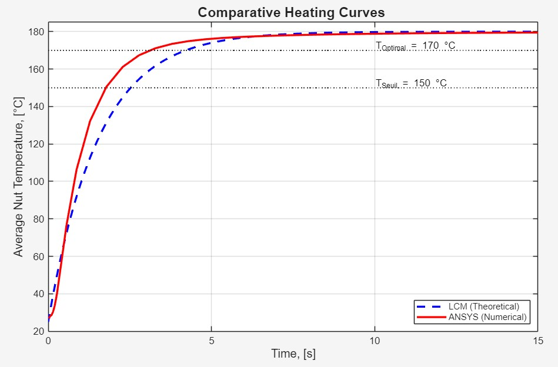
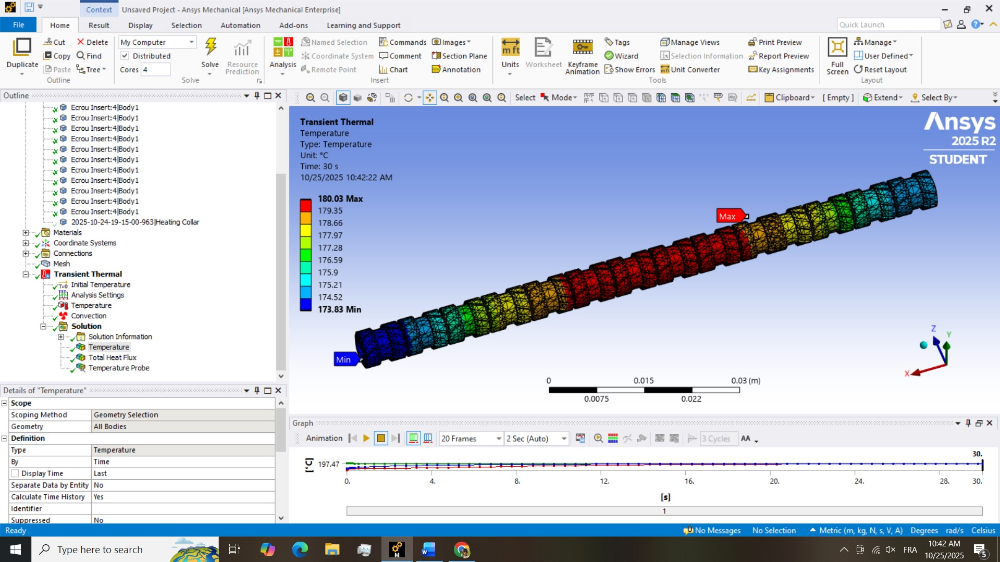
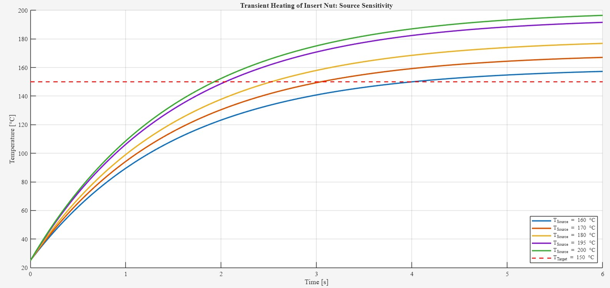
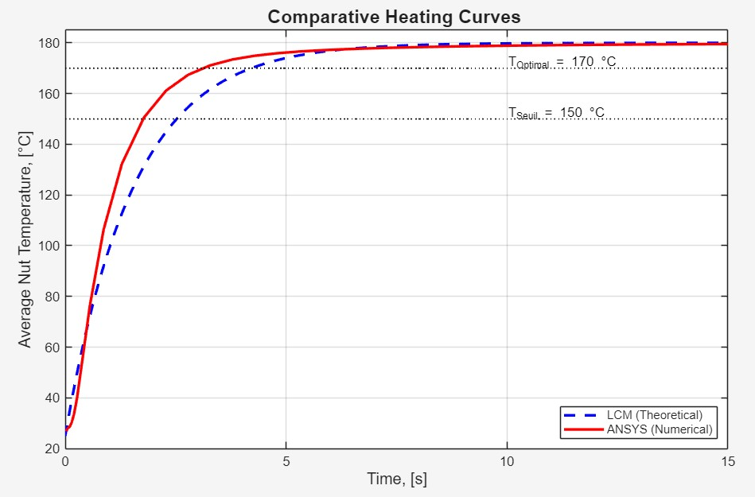
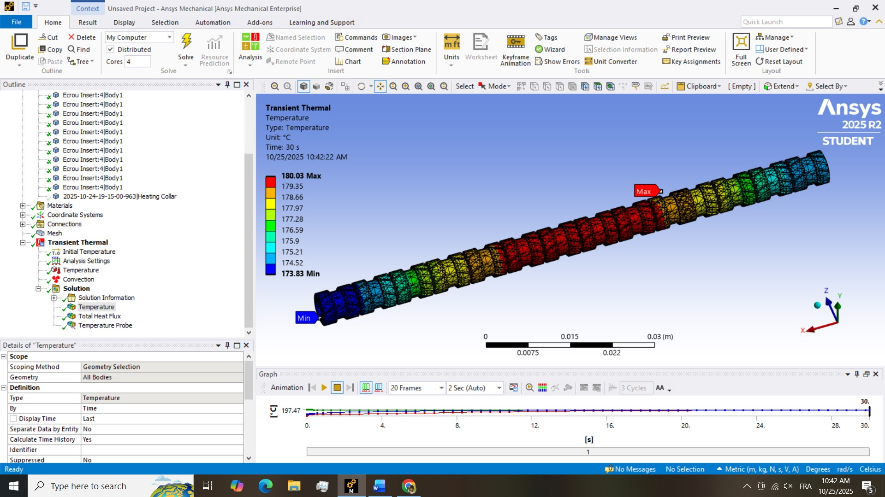
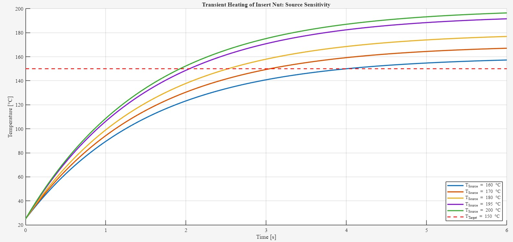

Transient Thermal Analysis for Process Optimization: A Comparative Study of Lumped Capacitance Modeling and Finite Element Simulation
Automated Hot Nut Insertion in Polycarbonate Components
Rafi NASRALAH, ENSET Mohammedia (Building on SMCV Internship Experience)
Download Full Study Report (PDF)
The Core Problem
The core problem this self-initiated research addresses is the quantifiable uncertainty of the hot-insertion process cycle time and the associated risk of thermal damage to the polycarbonate component. The fundamental question being answered is: "What is the true, validated time required for the brass insert nut to reach the optimal insertion temperature of $170\degreeC$ while stacked in the automated feeder?" This required replacing the simplistic, unreliable theoretical estimate with a high-fidelity numerical prediction.
Study Objective
The primary objective of this exploration is to determine the true, validated time required for the brass insert nut to reach the optimal insertion temperature ($\mathbf{170\degreeC}$) while stacked in the automated feeder.
Sub-Objectives:
- Quantify Analytical Flaw: Mathematically derive the heating curve using the Lumped Capacitance Model (LCM) to establish a theoretical $t_{\text{LCM}}$.
- Model Real-World Physics: Develop a high-fidelity Transient Thermal FEA model in ANSYS explicitly accounting for 3D geometry and contact physics.
- Validate and Optimize: Compare numerical and theoretical curves to establish the validated minimum heating time.
Comparative Analysis: Theory vs. Simulation
Method 1: Lumped Capacitance Model (LCM)
A simplified theoretical approach assuming uniform internal temperature. Relied on an estimated effective heat transfer coefficient.
$t_{\text{LCM}} = 4.22\text{ s}$
Method 2: Finite Element Analysis (FEA)
A high-fidelity numerical simulation (ANSYS Mechanical) accounting for transient heat transfer, actual 3D geometry, and contact thermal resistance.
$t_{\text{ANSYS}} = \mathbf{3.28\text{ s}}$
Key Finding: The Discrepancy
The FEA revealed significantly faster heating ($\approx$ 28.7% quicker) than the LCM predicted. Analysis of heat flux vectors (see gallery) confirmed that axial heat conduction between stacked nuts provided a major secondary heat path, a factor ignored by the simplified LCM.
Visual Evidence Gallery
 






Quantified Results Summary
| Parameter | $t_{\text{LCM}}$ (Theoretical) | $t_{\text{ANSYS}}$ (Validated FEA) | Error of LCM |
|---|---|---|---|
| Time to Reach $170\degreeC$ | $4.22\text{ s}$ | $\mathbf{3.28\text{ s}}$ | +28.7% (Overestimated) |
Engineering Impact & Final Strategy
The core engineering contribution of this work is the ability to simplify the process control based on the validated data:
-
Process Cadence Validation: The validated heating time ($\mathbf{3.28}$ s) is far less than the cycle time (15 s), confirming heating is not a bottleneck.
-
Simplified & Reliable Control Strategy: We implemented a robust strategy where the heating element is constantly ON, and safety is managed by limiting the source temperature ($T_{\infty} = 180\degreeC$) to prevent material degradation.
Recommendations and Future Work
A. Proposed Experimental Validation Protocol
Recommended real-world test using high-speed thermal imaging (IR camera) and embedded thermocouples to validate $t_{\text{ANSYS}}$.
B. Future Investigation: Thermomechanical Analysis
Next step: Answer "What happens during physical insertion?" using a **Coupled Thermal-Structural Analysis** (Viscoplastic Material Model, Large Deformation).